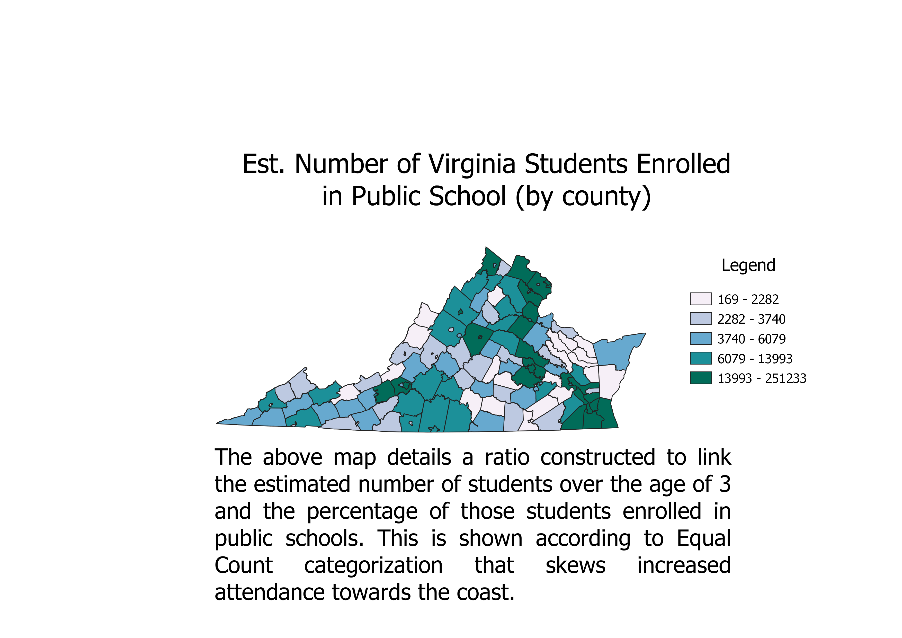
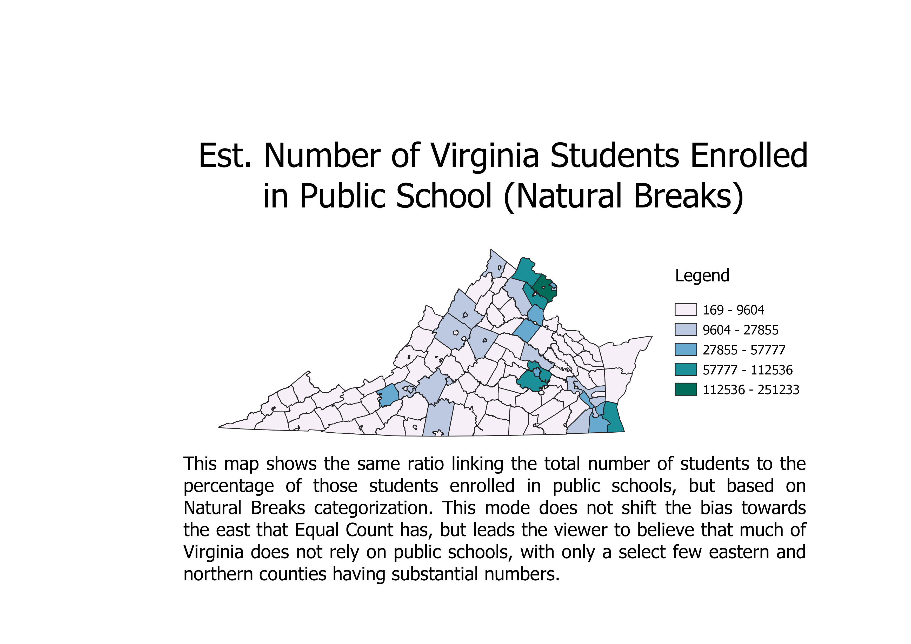
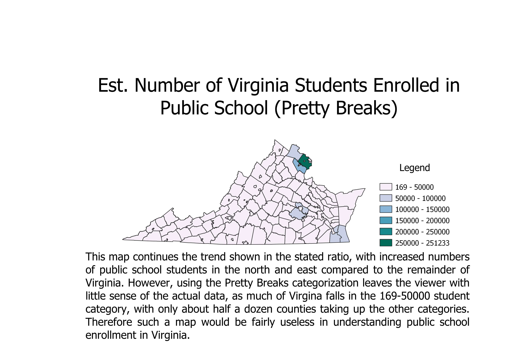

Homework 8: Census Data Choropleths
Stephen Wright
The following maps display the link between the estimated number of students over age 3 enrolled in school in Virginia
and the percentage of those students enrolled in public institutions. The ratio required multiplying the two fields against each other, then by the value of .01 to give the
give the correct number of public school students estimated per county. Each categorization method used (Equal Count, Natural Breaks, and Pretty Breaks)
produced a different picture of this function, but all skewed the results to show higher numbers of students in the north and east.
Each successive mode increased this bias, to the point that only a tiny subset of Virginia's counties and equivalents held any color indicating significant data.
To have any understanding of the true distribution of public school enrollment, Equal Count appears to be the most accurate in distinquishing which counties rely on public and private institutions.


